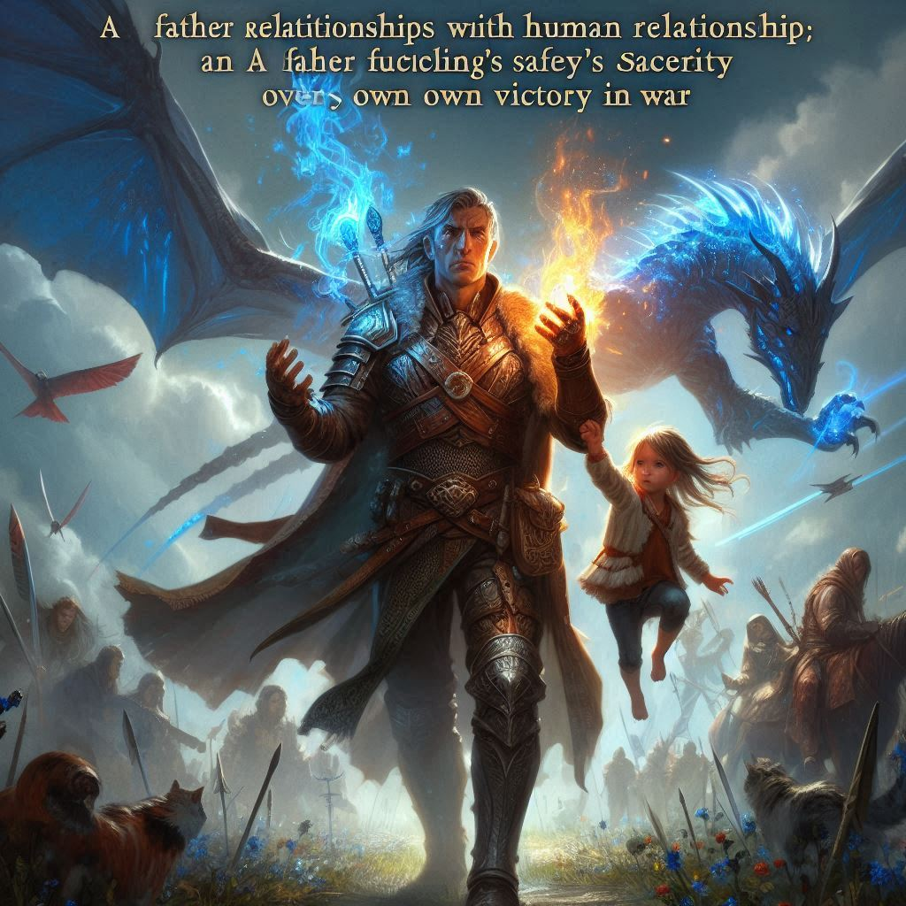

돌이킬 수 있는
목차
작가
문목하
출판일
2018.12.5
감상평에 대한 AI그림
이 책은 현실과는 살짝 거리가 있는 판타지적인 내용이면서 사람들 관계에 대한 인간적인 부분도 다루고 있어서 몰입하면서 볼 수 있었다. 주인공의 존재가 사건이 전개되며 밝혀지면서 가족간의 사랑을 다루기도 하며 감동을 주기도 하는 책이다. 전쟁의 싸움에서도 본인의 승리보다는 나의 자식의 안전을 더 생각하는 아버지를 보며 가족은 가족이다라는 느낌이 들었다.

감상평에 대한 AI평가
AI평가(감성적/논리적/창의적)
✨당신의 감상평은 감정이 풍부하게 표현되어 있습니다. 이야기가 독자에게 주는 감동과 따뜻함, 가족 간의 사랑을 느낄 수 있게 합니다. 특히 "가족은 가족이다"라는 문구를 통해 독자가 공감할 수 있는 감정을 잘 전달하셨습니다.
✨줄거리 전개와 캐릭터의 발전을 명확하게 설명하며 논리적으로 정리되어 있습니다. 주인공의 존재와 사건 전개, 그리고 아버지의 행동이 전체 이야기 속에서 어떻게 연결되는지 잘 분석하셨습니다. 감상평이 일관성 있고 조리 있게 서술되었습니다.
✨판타지와 인간관계라는 두 가지 주제를 조화롭게 연결한 점이 창의적입니다. 또한, 감상평에서 사용된 표현과 구체적인 묘사가 독특하고 인상적입니다. 이야기 속에서 느낀 감정을 표현하는 방식이 독창적입니다.